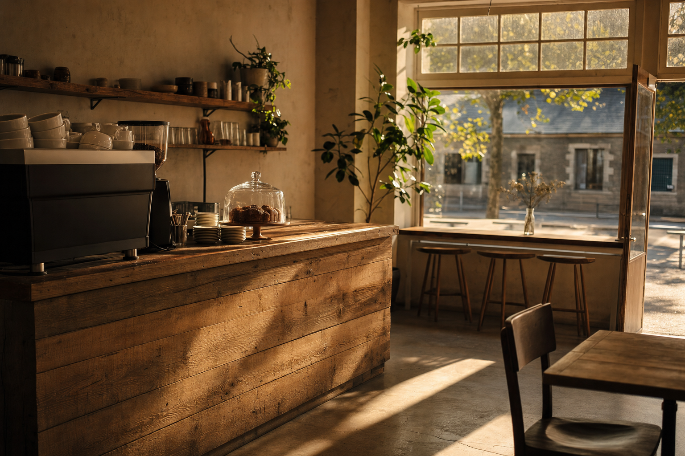
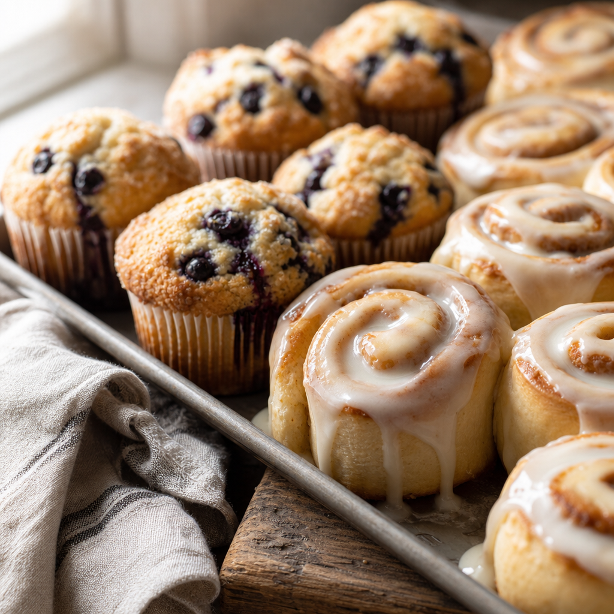
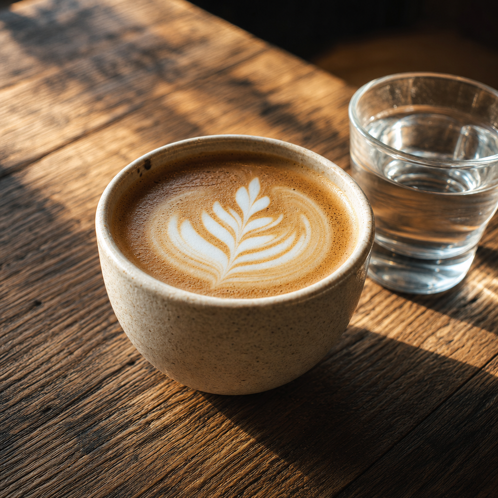
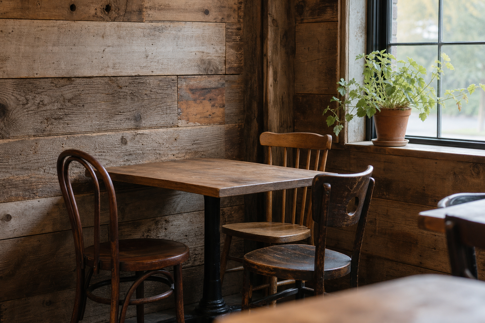

Open
Mon – Sat, 6am – 3pm

Coffee, cinnamon rolls, blueberry muffins — and a proper gluten-free menu, baked here, every day.

Not one sad option at the end of the counter. A real range, baked in the same kitchen as everything else, every day we are open.
If you have spent years asking the same careful questions in cafes, you already know how rare that is. Ask us anything — we would rather you asked than wondered.
And if you have no idea what any of that is about: the cinnamon rolls are very good.
We change the specialty menu weekly — seasonal syrups, a rotating pour, whatever the morning seems to want. It goes up here as well as on social, so you can check before you come rather than after.

The room was put together from barn scraps and leftover timber, by hand, before the first coffee was ever poured. It is a small place and it is meant to feel like one.
We opened in January 2024. Come early — most people do.

An unsolicited design concept for Goodness & Grace, prepared by Ohtari Labs. This is not their website.